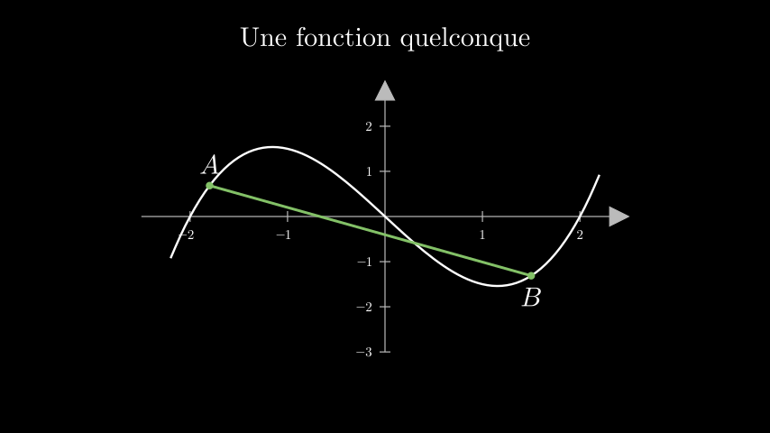

Avant de donner la définition d'une fonction convexe, on va s'intéresser au lien entre la courbe d'une fonction $f$ et la courbe de la fonction $-f$.
Les courbes représentatives des fonctions $f$ et $-f$ sont symétriques par rapport à l'axe des abscisses.
1. Courbe d'une fonction convexe
Soit $f$ une fonction définie sur un intervalle $I$. On note $C_f$ la courbe représentative de $f$ dans un repère du plan. On dit que la fonction $f$ est convexe si la courbe $C_f$ se situe en dessous de chacune de ses sécantes entre le deux points d'intersection.
Si la courbe $C_f$ se situe au dessus de chacune de ses sécantes entre le deux points d'intersection, on dit que la fonction $f$ est concave. Autrement dit, la fonction $f$ est concave si la fonction $-f$ est convexe.
Il existe des fonctions ni convexes, ni concaves.

2. Convexité et dérivabilité
Soit $f$ une fonction définie et dérivable sur un intervalle $I$. Les assertions sont équivalentes.
La fonction $f$ est convexe sur $I$.
La courbe $C_f$ est au-dessus de chacune de ses tangentes.